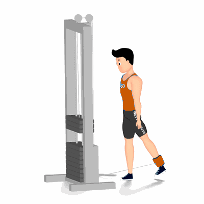

Glúteo no Cross Over

O movimento executado neste exercício, proporciona estímulo para o treinamento dos músculos do glúteo, principalmente se o puxador for posicionado na altura dos tornozelos.
Ficha Técnica
Tipo: Musculação
Grupo Muscular: Glúteo
Aparelho: Nenhum
Músculos: Nenhum
Como realizar
- Posicione próximo ao aparelho Cross Over;
- Em uma das pernas, coloque o puxador fivela na altura do tornozelo;
- Incline o troco levemente para frente, posicione as mãos no aparelho para lhe proporcionar mais estabilidade na execução;
- Manter o troco estável, utilize a perna onde está posicionado o puxador eleve-a o mais alto que conseguir, mentalizando todo esforço sobre o músculo trabalhado;
- Retorne à posição inicial e repita os movimentos.
 RC STORE
RC STORE